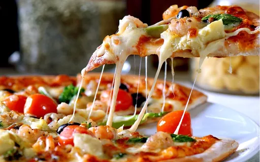

Seja bem vindo ao Ludvig Pizzaria
Sabores
PIZZAS ESPECIAIS I
BAIANA
Mussarela, calabresa moída, cebola, ovo e pimenta calabresa (opcional)
CALABRESA COM CEBOLA
Mussarela, calabresa fatiada e cebola
ESCAROLA ESPECIAL
Mussarela, escarola, cebola, parmesão e alho frito
LOMBO
Mussarela e lombo
MILHO
Mussarela e milho verde
PORTUGUESA
Mussarela, presunto, cebola, ovo e azeitonas verdes
SICILIANA
Mussarela, tomate picado e manjericão fresco
TOSCANA
Mussarela, calabresa moída e ovo
PIZZAS ESPECIAIS II
4 QUEIJOS
Mussarela, provolone, parmesão e queijo tipo catupiry
ALHO PORÓ
Mussarela, calabresa fatiada, alho poró e tomate picado
BLUMENAU
Molho parmegiana, mussarela, linguiça Blumenau e manjericão fresco
FATTORIA
Molho parmegiana, mussarela, linguiça Blumenau ralada, mussarela salpicada e manjericão fresco.
HAVAIANA
Mussarela, presunto e abacaxi
LOMBO E CATUPIRY
Mussarela, lombo e queijo tipo catupiry
LOMBO E CHAMPIGNON
Mussarela, lombo e champignon
MILHO COM BACON
Mussarela, milho verde e bacon
PARMEGIANA
Mussarela, molho parmegiana e parmesão
PEPPERONI
Mussarela, pepperoni e pimenta rosa (sabor suave - opcional)
PRIMA DONNA
Mussarela, requeijão cremoso, cebola e azeitonas pretas
RÚCULA
Mussarela, tomate seco e rúcula
TOMATE SECO
Mussarela, tomate seco e manjericão fresco
PIZZAS ESPECIAIS III
BOLOGNA - NOVIDADE
Molho parmegiana, mussarela, mortadela italiana, mussarela de búfala bola, pesto de manjericão e amêndoas laminadas
5 QUEIJOS
Mussarela, provolone, parmesão gorgonzola e queijo tipo catupiry
ABOBRINHA
Mussarela, abobrinha, presunto de Parma e queijo Polenguinho
AMERICANA
Mussarela, frango temperado e cheddar
CAPRICCIOSA
Mussarela, calabresa fatiada, cebola, palmito e azeitona verde
ESCAROLA COM BACON
Mussarela, escarola, provolone e bacon
FIGO, REQUEIJÃO E LOMBINHO
Mussarela, lombo, figo, requeijão e amêndoas
FRANGO COM CATUPIRY
Mussarela, frango temperado e queijo tipo catupiry
FUNGHI
Mussarela e funghi
GORGONZOLA COM TOMATE CEREJA
Mussarela, gorgonzola e tomate
MUSSARELA DE BÚFALA
Mussarela, mussarela de búfala e manjericão fresco
PAULISTA
Mussarela, palmito, ervilha e milho verde
PIZZAS ESPECIAIS IV
ATUM
Mussarela e atum
BOSCAIOLA
Mussarela de búfala, molho parmegiana, funghi e linguiça toscana moída (levemente temperada com alho)
CAIPIRA
Mussarela, frango temperado, queijo tipo catupiry ou cheddar e batata palha
CAMPAGNA
Molho parmegiana, mussarela de bufala ralada, linguiça frescal ao vinho branco e manjericão fresco
MARGUERITA ESPECIAL
Mussarela de búfala ralada, tomate cereja, lascas de parmesão, azeitona verde e manjericão fresco
NATURALE
Mussarela de búfala ralada, tomate picado, escarola, abobrinha, alho poró, azeitona preta e manjericão fresco (massa integral – opcional) - (novos ingredientes)
PALMITO
Mussarela, presunto e palmito
PARMA ESPECIAL
Mussarela, presunto de Parma, rúcula e lascas de parmesão
PEPPERONI ESPECIAL
Mussarela, molho parmegiana, pepperoni e parmesão ralado (Novo sabor)
PIZZAS ESPECIAIS V
ALICHE
Mussarela e aliche
CARNE SECA
Mussarela, carne seca refogada com cebola e requeijão (não é possível retirar a cebola)
CAPRESE
Mussarela, mussarela de búfala, tomate seco, pesto de azeitonas pretas* e manjericão fresco (*pasta de azeitonas pretas temperada com azeite de oliva e alho)
ESPECIAL
Mussarela, calabresa moída, milho verde, ovo, palmito, champignon e queijo tipo catupiry
GORGONZOLA E NOZES
Mussarela, gorgonzola, cebola crocante e nozes
MUSSARELA DE BÚFALA COM TOMATE SECO
Mussarela, mussarela de búfala, tomate seco e manjericão fresco
PARMA
Mussarela, mussarela de búfala e presunto de Parma
PRIMA DI PARMA
Mussarela, presunto de Parma, pesto de manjericão* e lascas de parmesão (*pasta de manjericão temperada com azeite de oliva, alho, nozes, parmesão, sal e pimenta)
TRIPLO FUNGHI
Mussarela de búfala ralada, funghi paris, shitake e shimeji
PIZZAS ESPECIAIS VI
4 ESTAÇÕES
Mussarela, presunto, palmito e funghi¹
ALCACHOFRA ESPECIAL
Mussarela, coração de alcachofra, presunto de Parma e azeitona preta
BAGGIO
Mussarela, funghi e presunto de Parma
CAMARÃO
Mussarela, camarão tipo exportação e shimeji
CAMARÃO ESPECIAL
Mussarela, camarão tipo exportação, rúcula, queijo Polenguinho e azeitona preta
PIZZAS DOCES I
BROTO | 4 FATIAS
MÉDIA | 6 FATIAS
GRANDE | 8 FATIAS
FAMÍLIA | 12 FATIAS
BANANA
Mussarela, banana, açúcar e canela
GOIABADA
Doce de leite, mussarela e fatias de goiabada
MAÇÃ
Mussarela, maçã com açúcar e canela e farofa crocante doce
MINEIRO DE BOTAS
Mussarela, banana, fatias de goiabada, açúcar e canela
PIZZAS DOCES II
BANOFFE
Mussarela, doce de leite, banana em rodelas, chocolate branco e canela
CALIFÓRNIA
Mussarela, abacaxi, pêssego, cereja, figo e ameixa
CHOCOLATE
Mussarela (pouca), chocolate meio amargo ralado e leite condensado
CHOCOLATE BRANCO
Mussarela (pouca) e chocolate branco ralado
CHOCOLATE COM MORANGO
Mussarela (pouca), chocolate, morango e leite condensado
CHOCOLATE MISTO
Mussarela (pouca), chocolate meio amargo e chocolate branco ralado